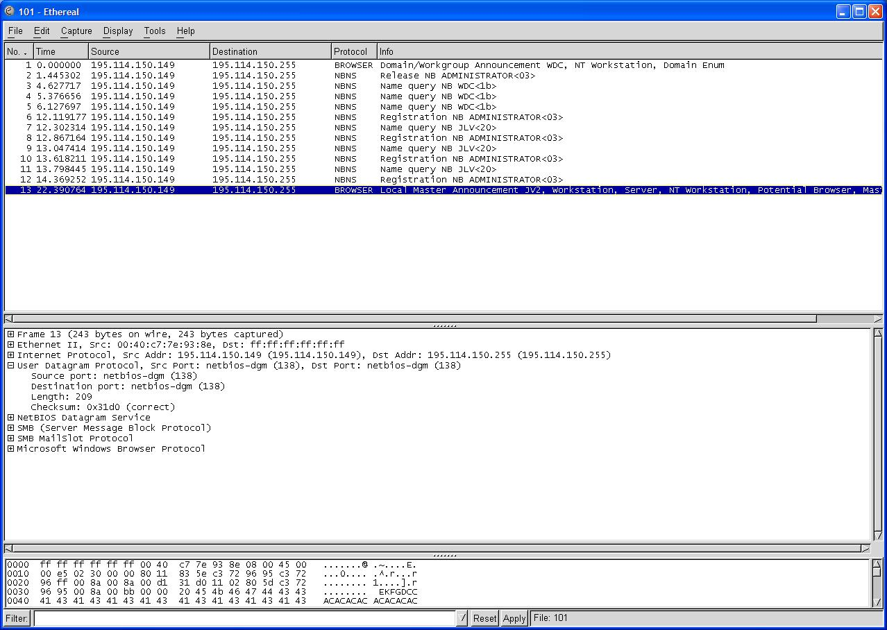
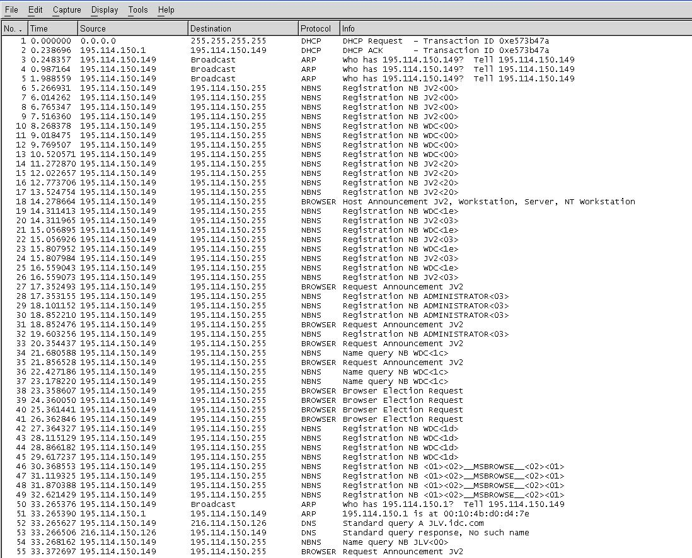
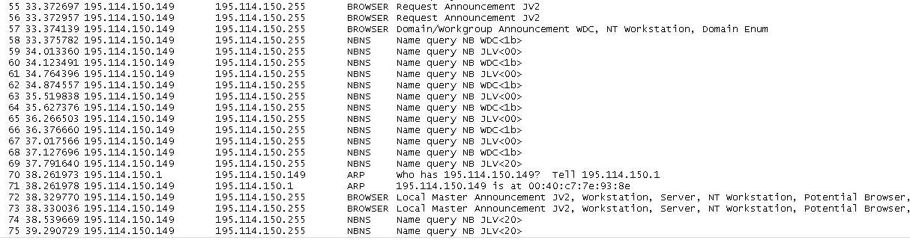
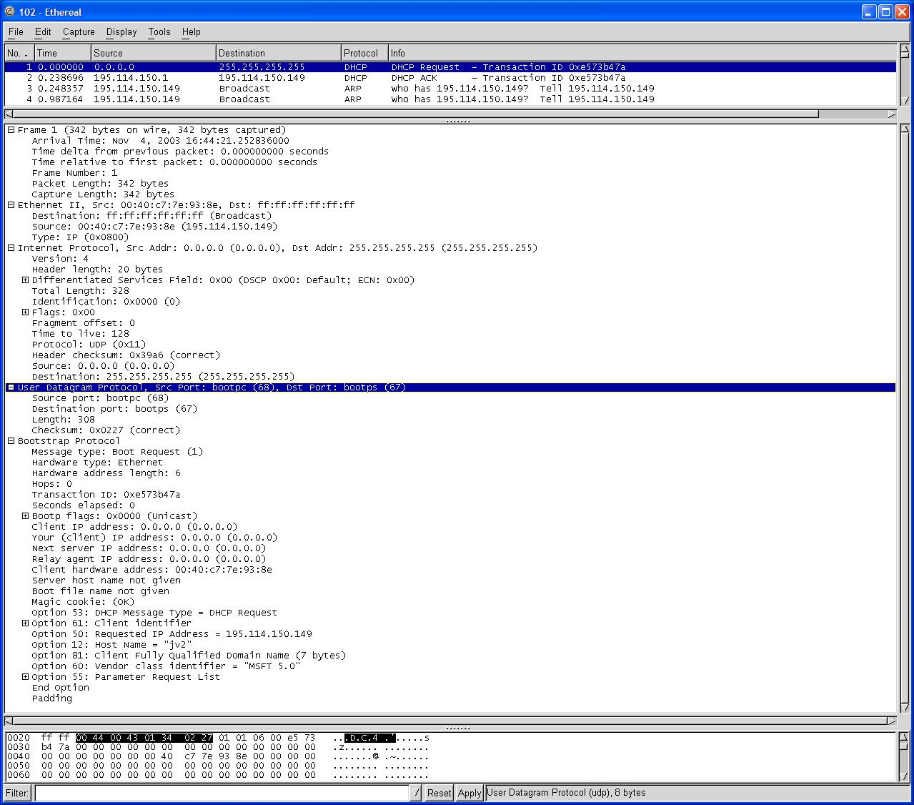
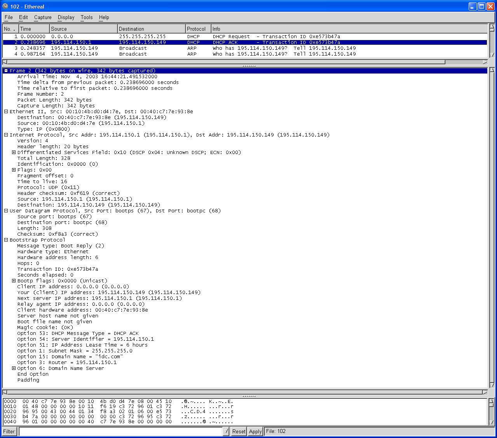

General
- Use ping and traceroute to do some reconnaissance on the Persons and Marlboro College networks. See if you can figure out the addresses of all the routers and determine as much information about the routing tables as you can.
- Use Ethereal or another packet sniffer to capture some DHCP packets floating around on the network, and describe what you've captured
Routers
For this assignment, I decided to assume that I do not know anything about the target networks. I thus started with google, which quickly provided the required web sites, namely http://www.marlboro.edu and http://persons.marlboro.edu
A ping of the above addresses quickly provided the IPs, namely 10.1.2.15 and 216.114.150.21.
This assignment is slightly clouded by my working from an address that is all to close to the second server, however, the results are illustrative.
[root@mule tmp]# ./po
++ ping -c 3 www.marlboro.edu
PING dubya.marlboro.edu (10.1.2.15) 56(84) bytes of data.
64 bytes from dubya.marlboro.edu (10.1.2.15): icmp_seq=1 ttl=61 time=60.8 ms
64 bytes from dubya.marlboro.edu (10.1.2.15): icmp_seq=2 ttl=61 time=58.7 ms
64 bytes from dubya.marlboro.edu (10.1.2.15): icmp_seq=3 ttl=61 time=24.4 ms
--- dubya.marlboro.edu ping statistics ---
3 packets transmitted, 3 received, 0% packet loss, time 2018ms
rtt min/avg/max/mdev = 24.410/48.000/60.846/16.702 ms
++ ping -c 3 www.persons.marlboro.edu
PING persons.marlboro.edu (216.114.150.21) 56(84) bytes of data.
64 bytes from persons.marlboro.edu (216.114.150.21): icmp_seq=1 ttl=255 time=0.264 ms
64 bytes from persons.marlboro.edu (216.114.150.21): icmp_seq=2 ttl=255 time=0.299 ms
64 bytes from persons.marlboro.edu (216.114.150.21): icmp_seq=3 ttl=255 time=0.301 ms
--- persons.marlboro.edu ping statistics ---
3 packets transmitted, 3 received, 0% packet loss, time 2018ms
rtt min/avg/max/mdev = 0.264/0.288/0.301/0.017 ms
++ traceroute www.marlboro.edu
traceroute to dubya.marlboro.edu (10.1.2.15), 30 hops max, 38 byte packets
1 lr.marlboro.edu (216.114.150.1) 0.417 ms 0.310 ms 0.302 ms the gateway of my network
2 GCrouter.marlboro.edu (12.6.231.1) 2.053 ms 2.085 ms 2.418 ms router on 12.6.231.1
3 192.168.1.1 (192.168.1.1) 12.265 ms 12.234 ms 17.707 ms router on 192.168.1.1, with an IP like that, obviously an internal network.
4 dubya.marlboro.edu (10.1.2.15) 13.462 ms 13.533 ms 13.278 ms this is the target
++ traceroute www.persons.marlboro.edu
traceroute to persons.marlboro.edu (216.114.150.21), 30 hops max, 38 byte packets
1 zonorus.marlboro.edu (216.114.150.3) 0.407 ms * 0.475 ms straight to it! am on this network - zonorus and persons are one and the same.
[root@mule tmp]#
Map the network
I started with host -l on the domains marlboro.edu and persons.marlboro.edu
# host -l persons.marlboro.edu
Host persons.marlboro.edu not found: 9(NOTAUTH)
; Transfer failed.
#host -l marlboro.edu which produced a huge listing. It's name servers include ns.msie.marlboro.edu, which looks rather like another domain.
#host -l msie.marlboro.edu confirms that.
There are just so many IPs, so many aliases, so many different groups of IPs. Without some tools this is a huge job.
So, I wrote a Unix script. See the following links for details:
I made some assumptions:
-
If cannot ping, I cannot proceed with the IP, thus drop it.
- If cannot traceroute, drop it.
- If traceroute takes a single hop to itself, it is on the same network. Could still portscan for interest, but not a network issue.
- A single hop to a different IP is of interest.
Findings for msie.marlboro.edu
The msie subnet seems to be 216.114.150.49 to 216.114.150.81.
216.114.150.126 is an IP for zonorus at 216.114.150.3
The results are skewed by my host being in this domain. However, this helps for one thing:
traceroute to www.sun.com (64.124.140.199), 30 hops max, 38 byte packets 1 lr.marlboro.edu (216.114.150.1) 0.409 ms 0.287 ms 0.237 ms 2 cisco1-s4-0-13-0.burl.sover.net (209.198.103.185) 6.286 ms 6.398 ms 6.207 ms 3 cisco0fe1-0-2.burl.sover.net (207.136.226.109) 6.861 ms 6.550 ms 6.289 ms 4 c1s4-0.wnskvtao.sover.net (207.136.201.66) 13.527 ms 7.902 ms 6.800 ms 5 sl-gw18-nyc-2-0.sprintlink.net (144.232.228.145) 17.003 ms 18.294 ms 17.552 ms 6 sl-bb25-nyc-15-0.sprintlink.net (144.232.13.165) 24.902 ms 16.228 ms 17.535 ms 7 sl-bb26-nyc-10-0.sprintlink.net (144.232.13.190) 16.576 ms 15.582 ms 16.594 ms 8 sl-bb27-nyc-8-0.sprintlink.net (144.232.7.38) 18.627 ms 15.858 ms 16.585 ms 9 sl-gw39-nyc-0-0.sprintlink.net (144.232.13.56) 16.122 ms 15.219 ms 17.793 ms 10 sl-abovenet-20-0-0.sprintlink.net (144.232.171.34) 22.320 ms 22.785 ms 22.808 ms 11 so-4-3-0.cr1.lga1.us.above.net (64.125.30.185) 23.310 ms 23.401 ms 23.065 ms 12 so-1-0-0.cr1.iad1.us.mfnx.net (208.184.233.61) 25.646 ms 27.447 ms 23.174 ms 13 so-1-0-0.cr1.dca2.us.mfnx.net (208.184.233.125) 32.331 ms 33.464 ms 31.791 ms 14 so-3-0-0.mpr3.sjc2.us.mfnx.net (208.184.233.133) 102.502 ms 90.561 ms 90.109 ms 15 so-0-0-0.cr1.sjc3.us.above.net (208.185.175.153) 97.096 ms 92.656 ms 93.691 ms 16 pos0-0.er2a.sjc3.us.above.net (208.185.175.190) 93.174 ms 97.183 ms 91.128 ms 17 alt2-1.java.sun.com (64.124.128.214) 132.984 ms 106.125 ms 114.518 ms
which shows that lr.marlboro.edu at 216.114.150.1 is the gateway to the internet.
Findings for marlboro.edu
zonorus.marlboro.edu has many aliases, including www.persons.marlboro.edu. This computer has lots of IPs, many NICs.
It has name server ns.msie.marlboro.edu.
It hosts www.persons.marlboro.edu, and many other web sites.
lr.marlboro.edu at 216.114.150.1 is the gateway to the internet. It is the default gateway for the domain.
STRAIGHT/SINGLE traceroute 216.114.150.129
1 lr-websound.marlboro.edu (216.114.150.129) 1.390 ms 0.322 ms 0.212 ms
MULTIPLE traceroute 216.114.150.130
1 lr.marlboro.edu (216.114.150.1) 0.473 ms 0.286 ms 0.215 ms
2 rocky.marlboro.edu (216.114.150.130) 0.570 ms 0.438 ms 0.382 ms
STRAIGHT/SINGLE traceroute 216.114.150.145
1 lr-symquest.marlboro.edu (216.114.150.145) 0.502 ms 0.295 ms 0.216 ms
This suggests subnets with lr.marlboro.edu handling the routing.
CROSSED/SINGLE traceroute 216.114.150.2
1 GCrouter.marlboro.edu (12.6.231.1) 4.458 ms * 2.470 ms
MULTIPLE traceroute 12.6.231.1
1 lr.marlboro.edu (216.114.150.1) 0.537 ms 0.270 ms 0.203 ms
2 GCrouter.marlboro.edu (12.6.231.1) 2.263 ms * 99.875 ms
MULTIPLE traceroute 12.6.231.113
1 lr.marlboro.edu (216.114.150.1) 0.479 ms 0.344 ms 0.228 ms
2 helix.marlboro.edu (12.6.231.113) 4.269 ms 2.295 ms 2.341 ms
Interesting. lr.marlboro.edu can route traffic for the 12.6.231.0/24 network but GCrouter has an IP on that network. GCrouter has 12.6.231.1 and 216.114.150.2. This network has two sets of IPs.
MULTIPLE traceroute 10.1.2.15
1 lr.marlboro.edu (216.114.150.1) 0.478 ms 0.288 ms 0.214 ms
2 GCrouter.marlboro.edu (12.6.231.1) 2.066 ms 2.126 ms 2.382 ms
3 192.168.1.1 (192.168.1.1) 12.319 ms 12.270 ms 12.343 ms
4 dubya.marlboro.edu (10.1.2.15) 13.401 ms 13.680 ms 19.334 ms
MULTIPLE traceroute 10.1.2.1
1 lr.marlboro.edu (216.114.150.1) 0.457 ms 0.292 ms 0.240 ms
2 GCrouter.marlboro.edu (12.6.231.1) 2.005 ms 1.987 ms 2.413 ms
3 * 192.168.1.1 (192.168.1.1) 12.558 ms *
lr.marlboro.edu routes to GCrouter.marlboro.edu for the marlboro network.
GCrouter needs an IP on the 192.168.1.0 network.
192.168.1.1 is an interface of a router which handles the 10.1.2.15 traffic. It has another IP, 10.1.2.1.
The 10.1.2.0 network is all routed this way.
traceroute to 192.168.1.1 (192.168.1.1), 30 hops max, 38 byte packets
1 lr.marlboro.edu (216.114.150.1) 0.597 ms 0.393 ms 0.281 ms
2 cisco1-s4-0-13-0.burl.sover.net (209.198.103.185) 130.583 ms 5.577 ms 5.471 ms
3 cisco0fe1-0-2.burl.sover.net (207.136.226.109) 5.850 ms 5.665 ms 5.826 ms
4 cisco1h0-16.bf.sover.net (207.136.207.25) 11.292 ms 11.262 ms 11.204 ms
5 192.168.1.1 (192.168.1.1) 10.432 ms 31.399 ms 30.423 ms
This prevents me from discovering anything about the 192.168.1.1 network.
traceroute to 10.1.4.1 (10.1.4.1), 30 hops max, 38 byte packets
1 lr.marlboro.edu (216.114.150.1) 0.465 ms 0.418 ms 0.250 ms
2 GCrouter.marlboro.edu (12.6.231.1) 2.664 ms 2.208 ms 2.100 ms
3 192.168.1.1 (192.168.1.1) 46.731 ms 20.829 ms 27.610 ms
4 * * *
traceroute to 10.1.5.1 (10.1.5.1), 30 hops max, 38 byte packets
1 lr.marlboro.edu (216.114.150.1) 0.623 ms 0.397 ms 0.292 ms
2 GCrouter.marlboro.edu (12.6.231.1) 2.056 ms 2.540 ms 2.148 ms
3 192.168.1.1 (192.168.1.1) 12.353 ms 12.151 ms 12.247 ms
4 * * *
MULTIPLE traceroute 10.1.5.38
1 lr.marlboro.edu (216.114.150.1) 0.475 ms 0.347 ms 0.234 ms
2 GCrouter.marlboro.edu (12.6.231.1) 2.145 ms 98.348 ms 99.970 ms
3 192.168.1.1 (192.168.1.1) 101.310 ms 99.762 ms 99.915 ms
4 mdhcp5-38.marlboro.edu (10.1.5.38) 99.892 ms 109.930 ms 101.357 ms
MULTIPLE traceroute 10.1.9.1
1 lr.marlboro.edu (216.114.150.1) 0.466 ms 0.265 ms 0.202 ms
2 GCrouter.marlboro.edu (12.6.231.1) 1.970 ms 2.798 ms 2.132 ms
3 192.168.1.1 (192.168.1.1) 12.225 ms 12.115 ms 12.312 ms
4 halogen.marlboro.edu (10.1.9.1) 81.805 ms 13.233 ms 13.284 ms
This suggests a network 10.1/16.
mdhcp5- suggests an IP assigned by a DHCP server. This may explain why so many IPs which pinged successfully failed on the traceroute.
STRAIGHT/SINGLE traceroute 10.2.1.1
1 dhcpd1.marlboro.edu (10.2.1.1) 2.053 ms 0.291 ms 0.220 ms
MULTIPLE traceroute 10.2.1.100
1 lr.marlboro.edu (216.114.150.1) 0.479 ms 0.294 ms 0.214 ms
2 dhcp100.marlboro.edu (10.2.1.100) 0.415 ms 0.368 ms 0.333 ms
STRAIGHT/SINGLE traceroute 10.2.2.1
1 dhcpd2.marlboro.edu (10.2.2.1) 0.489 ms 0.338 ms 0.233 ms
MULTIPLE traceroute 10.2.2.17
1 lr.marlboro.edu (216.114.150.1) 0.459 ms 0.285 ms 0.214 ms
2 10.2.2.17 (10.2.2.17) 0.656 ms 0.422 ms 0.374 ms
MULTIPLE traceroute 10.2.2.20
1 lr.marlboro.edu (216.114.150.1) 0.486 ms * 0.427 ms
2 10.2.2.20 (10.2.2.20) 0.451 ms 0.390 ms 0.338 ms
STRAIGHT/SINGLE traceroute 10.2.3.1
1 dhcpd3.marlboro.edu (10.2.3.1) 0.489 ms 0.293 ms 0.218 ms
This suggests that lr.marlboro.edu has an interface IP 10.2.1.1, and 10.2.2.1 and 10.2.3.1. They look like networks that interface with NICs on lr.marlboro.edu. The dhcp naming may be suggestive. Maybe, lr.marlboro.edu is a DHCP server, the 10.2/16 network being the range of assignable addresses.
MULTIPLE traceroute 10.0.2.10
1 lr.marlboro.edu (216.114.150.1) 0.527 ms 0.401 ms 0.217 ms
2 GCrouter.marlboro.edu (12.6.231.1) 2.220 ms 2.456 ms 3.731 ms
3 192.168.1.1 (192.168.1.1) 38.692 ms 23.798 ms 24.018 ms
4 * * *
5 develop.marlboro.edu (10.0.2.10) 41.477 ms 64.019 ms 16.958 ms
traceroute to 10.0.2.1 (10.0.2.1), 30 hops max, 38 byte packets
1 lr.marlboro.edu (216.114.150.1) 0.600 ms 0.396 ms 0.290 ms
2 GCrouter.marlboro.edu (12.6.231.1) 2.044 ms 2.093 ms 2.635 ms
3 192.168.1.1 (192.168.1.1) 12.996 ms 12.183 ms 12.586 ms
4 * * *
5 * * *
MULTIPLE traceroute 10.0.4.138
1 lr.marlboro.edu (216.114.150.1) 0.445 ms 0.272 ms 0.204 ms
2 GCrouter.marlboro.edu (12.6.231.1) 2.952 ms 2.323 ms 3.398 ms
3 192.168.1.1 (192.168.1.1) 44.859 ms 37.404 ms 734.125 ms
4 * * *
5 mc-priv-10.0.4.138.marlboro.edu (10.0.4.138) 41.078 ms 24.928 ms 24.026 ms
traceroute to 10.0.4.1 (10.0.4.1), 30 hops max, 38 byte packets
1 lr.marlboro.edu (216.114.150.1) 0.717 ms 0.394 ms 0.286 ms
2 GCrouter.marlboro.edu (12.6.231.1) 3.172 ms 2.040 ms 2.867 ms
3 192.168.1.1 (192.168.1.1) 25.656 ms 22.960 ms 29.478 ms
4 * * *
This suggests a network of 10.0/16 but I cannot find the interface.
Conclusions
-
This is flat out hard to do.
- I learnt a lot from this exercise.
- I will probably be tweaking the scripts for a long time to come.
- This is incredibly time consuming.
- I can only see so much from the outside.
- I do not get a ring side seat.
- Private IPs are a good way of hiding assets from the internet.
lr.marlboro.edu at 216.114.150.1 has some subnets based on NICs. It may have a DHCP server. It can route to the internet, but it also knows about GCrouter.marlboro.edu. It is 216.114.150.2, 12.6.231.1 and 192.168.1.?. It can route to 192.168.1.1, a router that routes to the marlboro networks. These include 10.0/16 and 10.1/16.
DHCP
For this assignment, I decided to spy on three scenarios:
Windows 2000 Professional logout and login

There was no renegotiation as, obviously, the IP does not have to change! However, there appears to have been an attempt to find a master domain controller. When it failed to find one, it assumed it is the master.
Windows 2000 Professional Boot


Although this looks like a lot, actually there is very little dhcp here.
The first frame broadcasts a DHCP request, onto the network, requesting IP 195.114.150.149, host of jv2. It expects a response with transaction id 0xe573b47a

The second frame is a DHCP ACKnowledgement, transaction id 0xe573b47. It comes from the DHCP server, which has allowed for the IP to be leased for up to 6 hours. Interestingly, the IP and MAC addresses are now known, and the router, domain name and domain name servers are also included.

At this point, the client OS has all of the information it needs. It does a quick check on the IP address by broadcasting three consecutive ARP packets asking who is on the just assigned IP. As there is no response, the client OS assumes all is OK and continues the system startup procedure.
I should point out that the DNS lookup failure is due to a non legitimate domain. I will sort this out one day, when I register a domain for myself.